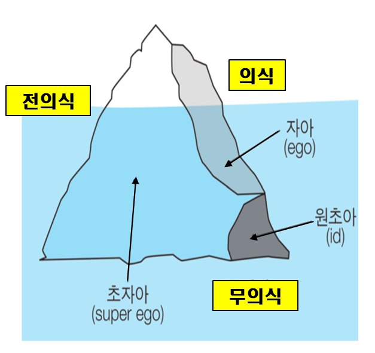

프로이드에 대한 이해와 사상
프로이드(Sigmund Freud, 1856~1939)는 체코슬로바키아 출신으로 의과대학에 진학하여 신경계통을 전공하였다. 그는 인간의 신체적 이상은 정신적 갈등에서 비롯된다고 믿었고, 1923년 발생한 암 투병을 하다가 83세로 세상을 떠났다. 이론적 가정은 인간의 본성에 대한 개념을 근본적인 가설을 제공할 뿐만 아니라 무의식의 영역을 개척한 점에서 심리학발달에 커다란 공헌을 하였다.
프로이드는 코페르니쿠스나 다윈의 영향력에 견줄 만큼 20세기의 ‘정신분석학의 아버지’로 손꼽히는 중요한 사상가이다. 그는 인간은 이성적이고 논리적이며, 지적인 존재가 아니고, 비이성적이면서 자신도 알지 못하는 무의식에 의해 영향을 받는 존재라고 밝혔다. 인간의 행동은 심리적 본성이 아닌 욕망으로 결정되며 자신에 대해 빙산의 일각만 인식할 뿐이라고 하였다.
프로이드는 인간 행동에 대한 무의식적 동기를 중요하게 여기기 때문에 인간을 비합리적이고 결정론적인 존재로 보았다는 점을 시사한다. 인간의 고유한 기능과 특성, 기제 및 역동성을 가지고 있기 때문에 성격은 성인기가 되어서도 변하지 않고 계속 이어진다고 보았다. 또한 발달은 생물학적으로 이미 예정된 보편적으로 비슷하게 성장하지만 정신과 성격구조는 성적 만족을 얻는 신체부위가 변화하면서 성격형성에 영향을 미친다는 심리성적 단계(psychosexual stage)를 구분하였다.
프로이드의 정신 구조 - 의식, 전의식, 무의식
프로이드는 정신세계를 지리적 개념으로 설명한데서 지정학설(topographical theory)이라고 하였다. 정신세계에서 의식과 무의식으로 구분하는 것은 억압(repression)과 관련이 있다며 자각 수준에 따라 의식, 전의식, 무의식 3층 구조로 물 위에 떠 있는 빙산에 비유하였다.

1) 의식
의식(consciousness)은 물위에 떠 있는 꼭대기 작은 부분으로 자신이 주의를 기울이는 순간에 곧 알아차릴 수 있는 곳으로 어떤 순간 알고 느낄 수 있는 감각과 경험이다. 즉 현재 쉽게 자각할 수 있는 기억， 감정， 공상， 경험， 연상 등을 아는 것을 말한다.
2) 전의식
전의식(preconsciousness)은 물표면으로 나타나고, 잠기기도 하는 부분으로 현재 의식 속에는 떠오르지 않지만 주의를 기울이면 쉽게 자각할 수 있는 정신 영역이다.
3) 무의식
무의식(unconsciousness)은 물속에 잠겨 있는 큰 부분으로 의식의 하부에 존재하는 죄책감， 열등감，상처받은 경험， 성적 욕구， 공격 욕구 등이다. 이런 것들은 의식 세계에서는 감당하기 힘든 것들이라서 의식세계로 올라오면 심한 불안을 느낀다. 이러한 무의식은 의식세계로 올라오지 않도록 자아는 많은 정신 에너지(psychic energy)를 사용하여 억압해 버린다.
성격 발달의 3가지 원칙
1) 정신적 결정(psychic determinsim)은 인간의 모든 정신적 활동은 그 이전의 행동이나 사건에 의해 결정되며 현재의 행동은 반드시 과거에 그 원인이 있다.
2) 무의식의 동기(unconscious motivation)는 일상생활에서 생각, 느낌은 자신의 인식할 수 없는 무의식에 의해 동기유발이 된다.
3) 성적 에너지(libido)란 어떤 사고, 행동의 동기가 된다.
성격의 구성 요소 -원초아, 자아, 초자아
인간의 행동은 원초아(id), 자아(ego), 초자아(super ego)로 구성된 체계 간의 상호작용을 위해 여러 가지 방어 기제(defense mechanism)를 사용하여 마음의 불안을 해결한다고 주장하였다.
1) 원초아
원초아(id)는 태어날 때부터 가지고 있는 가장 원초적인 부분으로 생물적이고 본능적인 욕구를 충족시키려 작용하는 요소이다. 이 원리는 고통은 최소, 쾌(快)를 최대로 하기 위해 주로 성욕, 공격성과 같은 충동에 의해 나타나는 성격의 기초를 이룬다. 본능에 따라 움직이는 원초아는 성격의 다른 두 부분이 자아, 초자아에게 쾌락을 위한 압력을 가한다. 원초아는 현실에 의한 도덕성 개념 없이 억압을 무시하고 즉각적인 만족하려는 성향 때문에 쾌락원리(pleasure principle)를 추구한다.
2) 자아
자아(ego)는 현실과 환경을 고려하여 합리적으로 욕구를 충족시킬 현실원리(reality principle)에 의해 움직인다. 즉흥적인 충동을 억제하고 원초아와 초자아의 갈등하는 이성적인 사고나 계획 등을 적당하게 조율하는 2차적 과정의 사고(secondary process thinking)가 자아가 발달한다. 이에 자아는 현실 상황을 고려하여 원초아와 욕구충족을 판단하며, 합리적이고 현실적인 해결 및 방법을 모색한다.
3) 초자아
초자아(super ego)는 옳고 그름에 대한 판단 역할을 한다. 초자아는 사회규범과 행동기준이 내면화되어 현실보다는 이상을, 쾌락보다는 도덕적인 완벽을 추구하는 3차적 과정의 사고(thirdly process thinking)를 한다. 원초아는 충동을 억제하고 도덕적이고 규범적인 기준에 맞추어 완전성을 유도한다. 일반적으로 초자아는 원초아와 서로 상반된 목적을 추구하기 때문에 자아가 역할이 제대로 발휘되지 못하면 양심과 자아 이상으로 죄책감과 우울, 열등감에 빠지기 쉽다.
2021.11.28 - [분류 전체보기] - 프로이드의 발달 이론- 심리성적 발달 5단계
프로이드의 발달 이론- 심리성적 발달 5단계
심리성적 발달 5단계 프로이드(Sigmund Freud)는 성격발달 과정에서 중요한 영향을 미치는 성 에너지인 리비도의 과잉 및 충족 또는 좌절 및 고착에 따라 성격발달에 중요한 영향을 미친다고 주장
think-sis.tistory.com